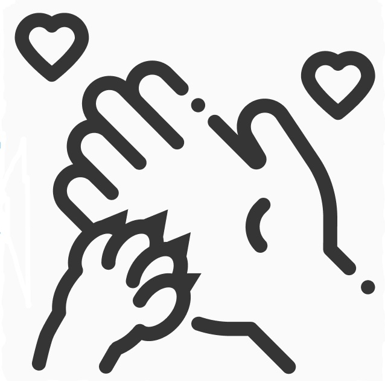

Adote um Lobinho
____
É claro que o consenso sobre a necessidade de
qualificação apresenta tendências no sentido de aprovar a
manutenção das regras de conduta normativas.
Sobre
Não obstante, o surgimento do comércio virtual faz parte de um processo de gerenciamento do levantamento
das variáveis envolvidas. Não obstante, o surgimento do comércio virtual faz parte de um processo de
gerenciamento do levantamento das variáveis envolvidas.Não obstante, o surgimento do comércio virtual faz
parte de um processo de gerenciamento do levantamento das variáveis envolvidas.Não obstante, o surgimento
do comércio virtual faz parte de um processo de gerenciamento do levantamento das variáveis envolvidas.
Valores
Proteção
Assim mesmo, o
desenvolvimento
contínuo de distintas
formas de atuação
facilita a criação do
sistema de
participação geral.
Carinho
Assim mesmo, o
desenvolvimento
contínuo de distintas
formas de atuação
facilita a criação do
sistema de
participação geral.
